遊びで植物を育てよう
2015/05/31
ツルムラサキは強いですね。
去年落ちた種が沢山育ってます。
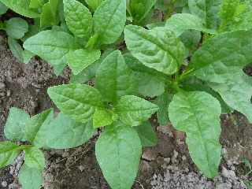
なんにもしなくても、勝手に大きくなっていいですね。
密集して生えているので、間引きを食べています。
【5月TOP】
【日記TOP】
【園芸TOP】
2015/05/31
ローズマリーの挿し木
ローズマリーって活用方法がよく分からないです。
いい香りなので、お茶にしたり肉料理に使えばいいんですけど、実際に使ったことはありません。

でもせっかく庭にあるんだから活用しよう！って思い、枝をチョキチョキ切り取って洗って乾燥させました。
切ってる時に短いものが出たので、挿し木にしました。
【5月TOP】
【日記TOP】
【園芸TOP】
2015/05/31
ラベンダーの挿し木
ラベンダーが綺麗に咲いていたので、増やしたいって思いました。
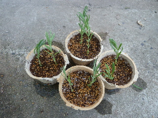
うまくいくかな？
今が花の時期なので、花が終わってから挿した方が良かったかな？
【5月TOP】
【日記TOP】
【園芸TOP】
2015/05/31
ジンチョウゲの挿し木をしました。
ネットでジンチョウゲの育て方を調べると、
突然枯れるので挿し木で予備を育てましょうってあったので、挿し木をしました。
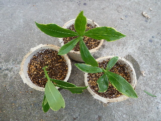
失敗したらまた挑戦します。
【5月TOP】
【日記TOP】
【園芸TOP】
2015/05/31
梅雨前にカモミールを大量に収穫しました。
たぶんもうカモミールは摘み取った方がいいですよね。
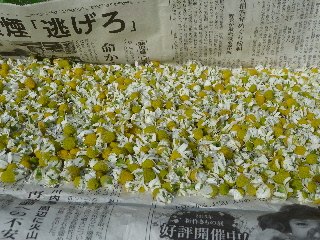
もうすぐ梅雨です。
乾燥を考えると5月中に収穫した方がよさそうなので、一気に収穫しました。
量が多いので、うまく乾燥出来るかな？
もっと早くから大目に収穫すれば良かったです。
【5月TOP】
【日記TOP】
【園芸TOP】
2015/03/23
ラベンダーの季節です。
ラベンダー綺麗ですね。
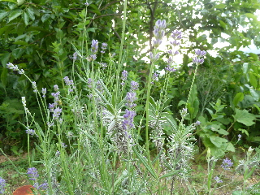
もっと量を増やしたいです。
もうちょっとしたら挿し木して増やそうと思います。
【5月TOP】
【日記TOP】
【園芸TOP】
2015/05/23
カモミール出来上がりました。
カモミールを1週間乾燥させたら、カラカラになりました。
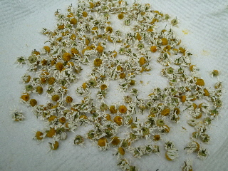
これでカモミールティーが飲めますね。
乾燥させただけですけど、なんか香りが強くなった気がする。
【5月TOP】
【日記TOP】
【園芸TOP】
2015/05/17
ジャガイモにテントウムシの幼虫？
これはテントウムシの幼虫？
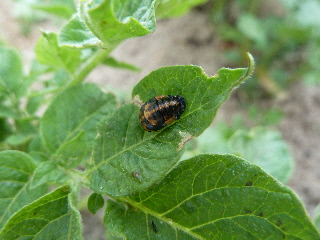
サナギなのかな？
アブラムシを沢山食べて欲しいです。
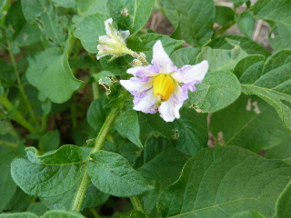
ジャガイモは花が咲いてました。
【5月TOP】
【日記TOP】
【園芸TOP】
2015/05/17
カモミールの収獲時期です。
綺麗に花が咲いているんですが、収獲します。
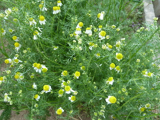
終わりかけの花をひとつひとつ摘み取るので、時間がかかりました。
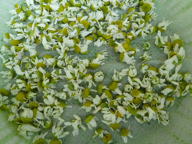
摘み取った花は水洗いして乾燥させます。
美味しく出来るといいですね。
【5月TOP】
【日記TOP】
【園芸TOP】
2015/05/05
ムカゴの芽が出ていたので、植え替えました。
去年落ちたムカゴが、あちこちで芽を出しています。
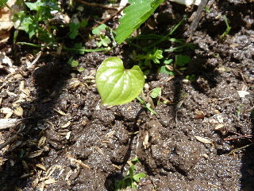
畑のスミッコに棒を立てて、植えてみました。
1年でどんだけ大きくなるでしょうね？
ムカゴが秋に採れるかな。
【5月TOP】
【日記TOP】
【園芸TOP】
2015/05/05
じゃがいもの葉っぱが食べられてる。
ジャガイモに害虫が沢山ついていました。
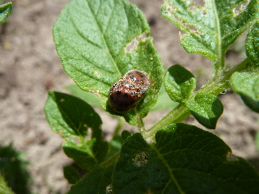
葉っぱを手べてるので取り除きました。
この虫って逃げないんですかね？手で簡単に捕まりました。
触っても、飛んで逃げたりしないんですね。
【5月TOP】
【日記TOP】
【園芸TOP】
過去の日記
【2024年5月の日記】
【2023年5月の日記】
【2022年5月の日記】
【2021年5月の日記】
【2020年5月の日記】
【2019年5月の日記】
【2018年5月の日記】
【2017年5月の日記】
【2016年5月の日記】
【2015年5月の日記】
【2014年5月の日記】
【2013年5月の日記】
【5月TOP】
【日記TOP】
【園芸TOP】
畑仕事じゃないよ。
【おいしいものを食べよう。】【しっかり寝よう。】
【ソロ活をしよう!】【季節感のあることをしよう。】【動画視聴はほどほどに。】【当サイトの全てのコンテンツは無断転載禁止です。】